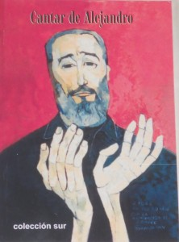

Salle UNEAC Villena, Vendredi 12 d'août à la 11 am en el Día Mundial de la Juventud.

Par: Karel Leyva Ferrer.
Una nueva edición de “Cantar de Alejandro”, libro de poemas dedicados a Fidel, publicado por la Colección Sur, proyecto parte del Movimiento Poético Mundial, será presentada este 12 d'août à la 11 Du matin, en la sala Villena de UNEAC, en La Habana.
La actividad, contará con la colaboración del Centro Iberoamericano de la Décima y el Verso Improvisado, del Ministerio de Cultura, la UNEAC y la Red en Defensa de la Humanidad.
El conjunto de textos, encabezados por el “Canto a Fidel” del Guerrillero Heroico, incluye a 24 autores de Chile, Argentine, Cuba, Porto Rico, Honduras y Perú; acompañados por la semblanza del colombiano Gabriel García Márquez y el prólogo del peruano Arturo Corcuera.
Destacan la presencia de poemas del Premio Nobel Pablo Neruda y el Premio Cervantes Juan Gelman junto a los Premios Naciones de Literatura de Cuba Ángel Augier, Nancy Morejón, Miguel Barnet, Pablo Armando Fernández, Carilda Oliver Labra y Jesús Orta Ruiz.
Aparece en el libro, De plus,, la palabra de los cubanos Jesús Cos Cauce, Francisco Riverón Hernández, Justo Roríguez Santos, Pura del Prado, Virgilio López Lemus, Juana García Abás, Lilian Alvarez, Antonio Guerrero, Alex Pausides y Pedro López Cerviño.
Suman sus voces a este conjunto los poetas peruanos Hildebrando Pérez Grande, Arturo Corcuera y Juan Cristóbal, quienes entrelazan verso y memoria, historia y emoción para atrapar la esencia de aquel “hombre de costumbres austeras e ilusiones insaciables, de modales tenues e incapaz de concebir ninguna idea que no sea descomunal” –al decir del autor de “Cien años de soledad”.
El hermoso volumen, ilustrado con un retrato Las manos de Fidel que hiciera el pintor ecuatoriano Oswalo Guayasamín, será presentado por el poeta y narrador Omar González,Coordinador del Capitulo Cubano de la Red de Intelectuales, Artistas y Luchadores Sociales en Defensa de la Humanidad, red con una relación entrañable con el Movimiento Poético Mundial.